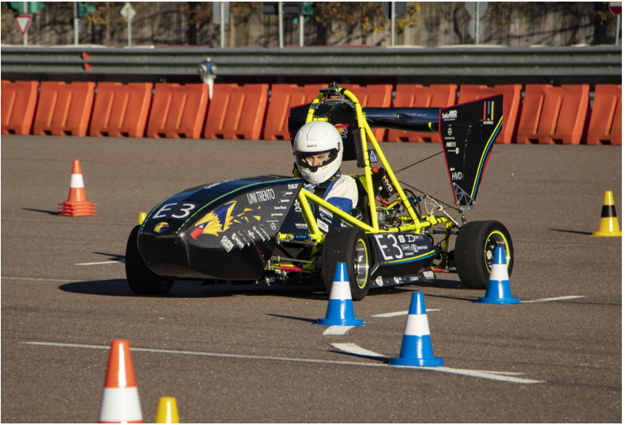
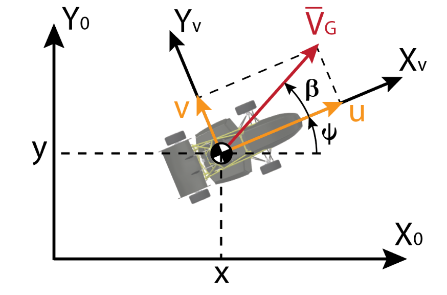
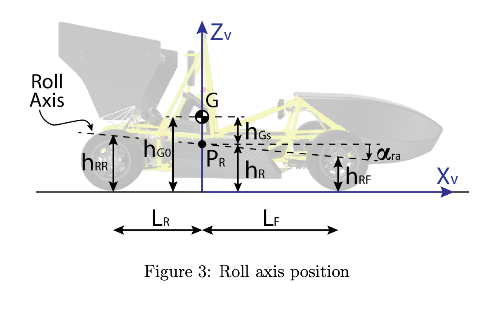
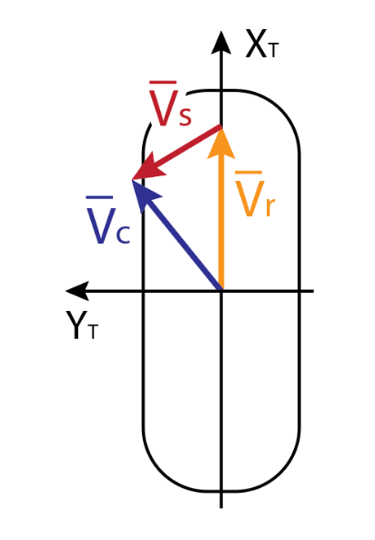
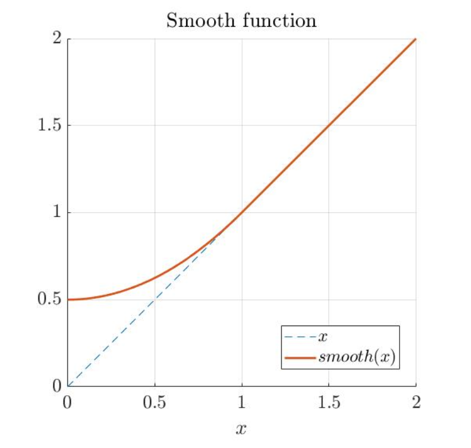
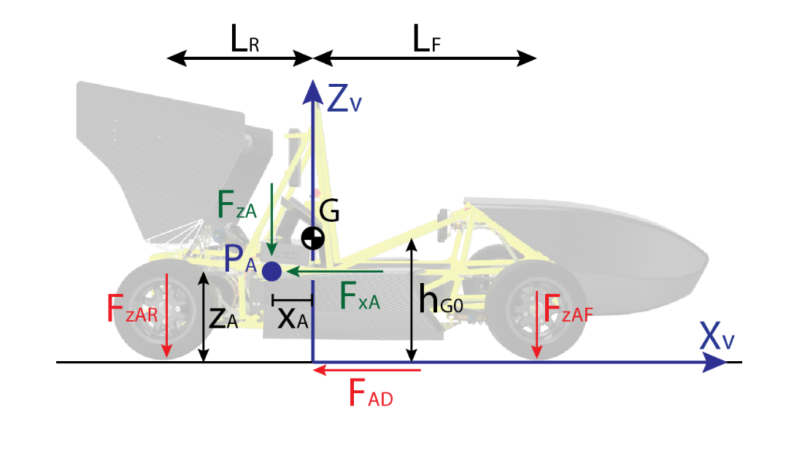
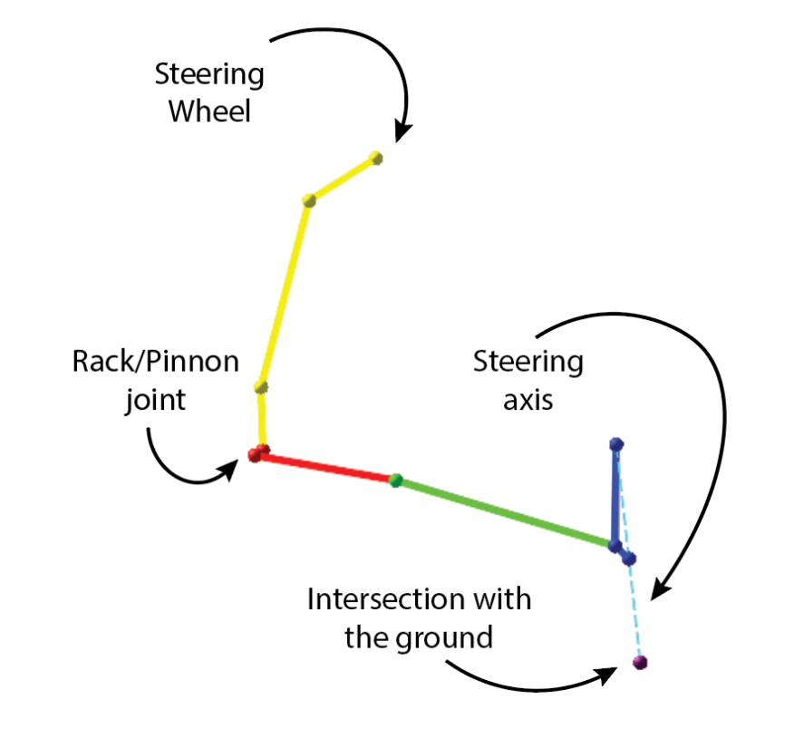
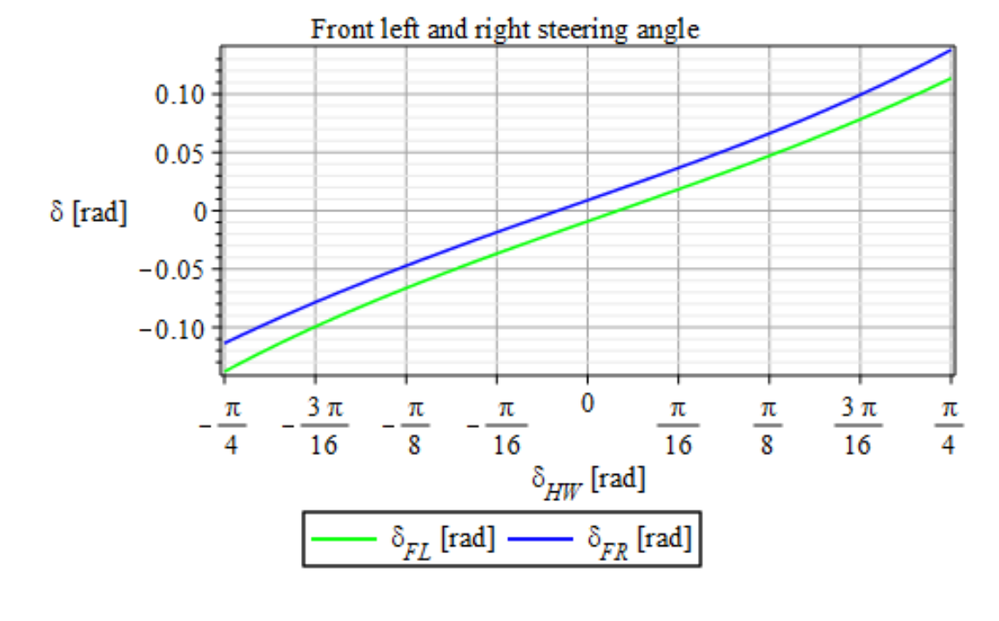

Vehicle Model for Simulation
In this report, the theory behind the vehicle model is briefly explained. This allows us to understand how the simulation environment works and how to define some of the most important characteristics of the vehicle kinematics and dynamics.
The model parameters are selected in order to simulate the behaviour of the Trento Formula SAE racing vehicle, called Chimera Evoluzione (figure 11). In the original model, the tires behaviour is simulated using the Pacejka formulation. However, in the validated version of the model, the tires characteristics will be modelled using a simplified tire model, defined in a dedicated paper.
The description follows the works done by Piccinini M. in his thesis [16]. In order to extract equation of motion, the symbolic computation software Maple \(^{\circledR}\) is used, with the multibody library MBSymba \(^{\circledR}\)[13].

Figure 1: Photo of Chimera Evoluzione (Tests of 09-11-2020)
Vehicle kinematics
As first, we have to define the vehicle reference frame \(\left(R F_{V}\right)\) with respect to an absolute fixed reference frame \(\left(R F_{0}\right)\). The vehicle reference frame has its origin in the projection of the vehicle Centre of Mass (CoM) in the xy absolute plane, the \(\mathrm{x}\)-axis points in the vehicle forward direction and the z-axis points upward. The transformation from \(R F_{0}\) to \(R F_{V}\) is a translation of \(\{\mathrm{x}, \mathrm{y}, 0\}\) and a rotation of the yaw angle \((\psi)\) around the z-axis, as depicted in figure 2 .

Figure 2: 2D representation of the vehicle reference frames
With reference to figure \(2, R F_{V}\) moves with a linear velocity \(\left\{v_{x}, v_{y}, 0\right\}\) and an angular velocity along the z-axis of \(\Omega=\dot{\psi}\). Projecting these components in the vehicle reference frame, the longitudinal and the lateral velocity \((u\) and \(v)\) can be defined. For definition, the angle \(\beta\), called Body Side Slip Angle, is the angle between the absolute velocity vector \(\left(\bar{V}_{G}\right)\) and the \(x_{V}\) axis.
Until now, the vehicle is shown as a rigid body that moves in the absolute ground plane. To proceed with the kinematic analysis, it is useful to distinguish between the Spring and Un-Spring masses. The Un-Spring masses correspond to the parts of the vehicle "constrained" to the ground - i.e. the tires, the wheels, the hub and part of the suspensions assembly -. The spring masses, instead, are the vehicle parts above the suspensions, namely that parts of the vehicle that can moves under the effects of suspensions deformation - for example, the remaining part of the suspensions, the chassis, the motors, the inverters or the driver \(-\).
The spring masses have 3 additional Degrees of Freedom that corresponds to the Roll \((\phi)\) the Pitch \((\theta)\) and the Heave \((z)\) motion. These are the components of the so-called internal kinematics. In particular, the Roll Axis has to be modelled. It is the axis around which the vehicle rolls and depends on the suspension geometry. Specifically, assuming the vehicle as symmetric, the Roll Axis lives in the \(\mathrm{xz}\) vehicle plane and pass through the front and rear Roll Centres: points with a height of \(h_{R F}\) and \(h_{R R}\) respectively. The angle between the Roll Axis and the \(x_{V}\) axis, in static case, is called \(\alpha_{r a}\). The geometric representation of the internal kinematics geometry is depicted in figure 3

Figure 3: Roll axis position
In order to mathematically define the internal kinematics, an auxiliary reference frame \(\left(R F_{S, a}\right)\) is defined, starting from the vehicle reference frame. In the static condition, this new frame has the origin in the point \(P_{R}\), depicted in figure 3. The \(\mathrm{x}\) axis that coincides with the roll axis and points in the vehicle forward direction. The \(\mathrm{z}\) axis points upward. Besides, the auxiliary reference frame is free to move along the \(z_{V}\) axis to model the heave motion. From \(R F_{S, a}\), the others internal kinematic motion can be defined in order to find the Spring masses reference frame \(\left(R F_{S}\right)\) : firstly, the pitch along y and, secondly, the roll motion along \(\mathrm{x}\). Since the angles are small, the transformation matrix between \(R F_{S, a}\) and \(R F_{S}\) can be linearized. The result is shown in 2 .
In order to resume the transformations, they are collected in relation 3.
Vehicle Dynamics
Definition of the Bodies
Equations of motion are derived by means of the Newton-Euler method. The bodies definition is necessary to start the dynamic analysis.
Vehicle body
The vehicle body consists of the whole vehicle body in the static configuration. It has a mass of \(M\) and an inertia tensor equal to \(\left[I_{V}\right]\). The inertia components \(I_{x y, V}\) and \(I_{y z, V}\) are negligible with respect to the other terms of the matrix so they can be set equal to zero. The centre of mass of this body is always placed in the point \(\left[0,0, h_{G 0}\right]\) of the vehicle reference frame \(\left(R F_{V}\right)\).
Chassis body
The chassis body models the spring masses. For this reason, its mass is equal to \(m_{S}\) and its inertia tensor is \(\left[I_{C}\right]\). Similarly to the vehicle case, \(\left[I_{V}\right]\) has the \(x y\) and \(y z\) terms that can be set to zero. The centre of mass of the chassis reference frame is placed in the origin of \(R F_{S}\).
Wheels bodies
The wheels bodies are four and its mass is \(m_{W}\). Each wheel has an associated reference frame, with the origin in the wheel centre, that is fixed with respect to the wheel. Starting from the vehicle reference frame, the applied transformations are shown in relation 6.
The suffix of the reference frames corresponds to the wheel position: \(R R\) rear-right, \(R L\) real-left, \(F R\) front-right and \(F L\) front-left. This notation will be used to label the position of different quantities during this work. \(W_{F}\) and \(W_{R}\) are the front and the rear track-width respectively while \(R_{F}\) and \(R_{R}\) are the front and rear wheel radii. The angles \(\delta\) are the steering angle at the wheels. Since the vehicle is front wheel steering, the associated rotation is performed only to the front wheels. The angles \(\xi\), instead, model the wheel spin.
The inertia tensor is diagonal and it is equal to \(\left[I_{W}\right]\).
Anti-bodies
In equation of motion, the main vehicle motion \((x(t), y(t)\) and \(\psi(t))\) are associated to the vehicle, while the other Degrees of Freedom, called also relative, are associated to the chassis and to the wheels. In order to neglect the static term from the chassis and from the wheels - the static term is already addressed by the vehicle body - special constructs are named anti-bodies. They are virtual bodies with the inertia components negative with respect to the associated body and placed in the static position of the related body, i.e. their relative DoF are set equal to zero.
Tire model
In the model of Piccinini [16], an high fidelity semi-empirica) tire model is used in order to model the tire characteristics. In particular, the Pacejka tire model allows us to have a precise steady-state representation of the tire behaviour.
The tire model returns the longitudinal and lateral tire force \(\left(F_{x}\right.\) and \(\left.F_{y}\right)\) and the self-aligning moment \(\left(M_{z}\right)\) as a function of the practical slip \((\bar{\kappa})\), the tire vertical load \(\left(F_{z}\right)\) and the wheel camber \((\gamma)\).
The camber is the angle between the wheel middle plane and the xz-vehicle plane. This angle is not fixed but varies with the suspension deflection. Using the suspension kinematic model, a roll-to-camber map is fitted in order to address the angle variation as a function of the roll angle.
The tire slip is computed starting from the wheel speeds with reference to figure 4 .

Figure 4: Tire top view: the wheel speeds are highlighted
The rolling velocity is equal to the product between the wheel angular velocity and the wheel radius \(-\bar{v}_{r}=[\omega R, 0,0]^{T}-\). The contact point velocity \(\left(\bar{v}_{c}\right)\) depends on the vehicle velocity and is a \(2 \mathrm{D}\) vector that lives in the ground plane. The sliding velocity is the vectorial difference between the contact point and the rolling velocity \(-\bar{v}_{s}=\bar{v}_{c}-\bar{v}_{r}\)
\({ }^{1}\) The semi-empirical models uses physical based information in order to fit very sophisticated behaviour with a simpler mathematical function. This approach makes the computation cheaper and the simulation faster. -. Then, the practical slip can be defined as reported in 8 .
The longitudinal slip can be also called \(\kappa\).
In conclusion, the tire model evaluates the following functions.
Slip transient model
In order to consider also the transient in the tire model, a first-order dynamical equation can be applied to the slip. Experimentally, it is possible to observe that this assumption well approximates the real tire behaviour. The time constant of the dynamical equation can be written as a function of the vehicle longitudinal speed and of the tire relaxation length \(-l_{i}\) with \(i=\{x, y\}-\). The latter is assumed to be constant and describes the distance, covered by the rolling tire, at which the transient finishes.
The terms with the lowercase \(S S\) represents the steady-state slip value, computed using equation 8, while, the terms without the \(S S\) corresponds to the transient slip.
Low speed slip correction
The steady-state slip definition, defined in 8 , becomes singular when the longitudinal vehicle speed tends to zero. Besides, the longitudinal transient slip 10 may oscillate under the effects of a step input torque at low vehicle speed. These non-physical oscillations may remain for a relatively long time. In order to address the singularity problem, a smooth function is introduced in order to avoid the annulment of the slip denominator - ref. to expression 8 and figure 5 -.

Figure 5: Smooth Function
\(V_{\text {low }}\) is a threshold velocity that allows us to split the high and low speed. The smooth function is applied only if \(V_{\text {low }} \geq\left|v_{c, x}\right|\). Usually, this threshold is set to \(1 \mathrm{~m} / \mathrm{s}\).
In order to cancel the oscillation phenomenon, instead, it is possible to introduce a virtual damping factor \(\left(K_{V_{\text {low }}}\right)\) that aims to smooth these oscillations.
In 12, \(C_{F_{\lambda}}\) is the longitudinal tire stiffness, i.e. the slope of the tire characteristic when \(\lambda=0\) and \(v_{s, x}\) is the longitudinal component of the sliding velocity with reference to figure 4
This correction is applied only for low speed. For this reason, it is needed a function that smoothly goes to zero when the speed tends to \(V_{\text {low }}\).
With a proper tuning of \(K_{V_{\text {low }, 0}}\), the non-physical oscillations can completely disappear. However, this correction may introduce instability problems around the threshold velocity \(V_{\text {low }}\).
Powertrain model
The powertrain of the considered electric vehicle is composed of two permanent magnets three-phase electric motors - model Emrax 208 -, two inverters, the speed reducers and the battery pack - \(6.5 \mathrm{kWh}-\).
From Formula SAE rules, the maximum power of the battery pack is \(80 \mathrm{~kW}\). This is computed as follow.
Where \(P_{\text {batt }}\) is the battery power, in watt, \(V_{\text {batt }}\) is the voltage supply, in volt, and \(I_{\text {batt }}\) is the provided current, in ampere. The maximum voltage is \(E_{\text {batt }}=450 \mathrm{~V}\). \(V_{\text {batt }}\) can be computed starting from \(E_{\text {batt }}\) and subtracting the potential drop due to the internal battery cells resistance \(-V_{\text {batt }}=E_{\text {batt }}-I_{\text {batt }} R_{\text {tot }}\) with \(R_{\text {tot }} \approx 0.46 \Omega-\).
Knowing that the inverters convert the DC voltage into an AC three-phase voltage and assuming that the power is split in a symmetric way between the two motors, it is possible to compute the effective motor current \(\left(I_{m o t, r m s}\right)\). This current is used to compute the motor torque by means of the motor characteristic.
The motors are connected to an ordinary single-stage gearbox with transmission ratio \(\tau_{\text {red }}=52 / 15\) and with efficiency \(\left(\eta_{\text {red }}\right)\) around \(0.93\).
Each motor is able to provide \(80 \mathrm{Nm}\) when the battery pack is fully charge. This torque is almost constant in the entire velocity range, from 0 to \(\omega_{\text {mot,Max }}\) - for this motors, \(\omega_{\text {mot }, \text { Max }} \approx 5200 \mathrm{rpm}-\). The torque cutting speed \(\left(\omega_{\text {motTorqueCut }}\right)\) is set equal to \(4800 \mathrm{rpm}\) and represents the speed from which the torque decreases linearly until \(\omega_{\text {mot,Max }}\), where the torque is equal to zero. However, the maximum motor speed is not the only limit at which the motors are subjected. There is also a power limit that cuts the torque when it is larger than \(T_{m, \text { MaxSpeed }}=P_{\text {batt }} /\left(2 \omega_{\text {mot }}\right)\).
To sum up:
- If \(T_{m, r e q} \omega_{\text {mot }} \leq P_{\text {batt }}\) and \(\omega_{\text {mot }} \leq \omega_{\text {maxTorqueCut }}\)
- If \(T_{m, r e q} \omega_{m o t}>P_{\text {batt }}\) and \(\omega_{\text {mot }} \leq \omega_{\text {maxTorqueCut }}\)
- If \(\omega_{\text {mot }}>\omega_{\operatorname{maxTorqueCut}}\)
where \(T_{m, \text { req }}\) is the motor required torque and \(T_{w, m o t}\) is the torque available at the wheel. In order to consider also the actuation delay, a first-order differential equation is applied to the required motor torque.
\(p_{D r}\) is the throttle pedal level that can vary from zero to one \(-p_{D r} \in[0,1]-\).
Aerodynamic model
The aerodynamic forces are applied to a virtual point called centre of pressure \(\left(P_{A}\right)\) placed in \(\left[x_{A}, 0, z_{A}\right]^{T}\). The lift \(\left(F_{z A}\right)\) is the vertical component of the aerodynamic force while the \(\operatorname{drag}\left(F_{x A}\right)\) is the longitudinal one.
An equivalent set of forces can be computed in such a way that the aerodynamic lift is divided between the front and the rear axle and the drag is applied to the projection of the centre of mass to the ground.

Figure 6: Application scheme of aerodynamic forces
Since the aerodynamic forces have a quadratic dependency on the longitudinal velocity, we can write as follow.
\(C_{D}\) and \(C_{L}\) are the real drag and lift coefficients, respectively. \(C_{A D}, C_{A z R}\) and \(C_{A z F}\) are the transformed drag and axle-lift coefficients. \(\epsilon_{A}\) is the aero-balance and is defined as \(F_{z A F} / F_{z A}\). It quantifies the amount of total downforce applied at the front axle.
Load transfer model
In the double-track vehicle model, the tire vertical load can be divided into two terms: the first - \(F_{z i}\) with \(i=\{R, F\}\) - considers the static force, the aerodynamic forces and the longitudinal load transfer - generated by the longitudinal acceleration \(a_{x}\) -; the second - \(\Delta F_{z i}\) with \(i=\{R, F\}\) - corresponds to the lateral load transfer.
The following computation shows how the two components of the vertical force are computed. \(F_{y i}, i=\{R, F\}\) are the axle lateral force and \(K_{\phi i}, i=\{R, F\}\) are the rear and front roll stiffness.
From equations 22, it is possible to distinguish two components in the load transfer. The first component, called transient load transfer, involves the roll stiffness. It means that it is generated from the suspension/tire deformation. The second term, named instantaneous load transfer, is absorbed by the suspension structure and does not cause suspension deflection.
In the vehicle model taken into consideration, the spring mass is seen as a rigid body that is suspended by four springs, representing the suspension/tire systems. From the model kinematics, it is possible to find the coordinates of the spring anchor points \({ }^{0} S_{i j}, i=\{R, F\}, j=\{R, L\}\) - and compute their height variation \(\left(\Delta z_{i j}\right)\).
\(R F_{S}\) is defined in the expression 3. The sign of the coordinates \((\pm)\) depends on the indices \(i\) and \(j\). The supra-script \({ }^{0}\) means that the considered point must be projected in the ground plane. For the computation of \(\Delta z_{i j}\), the third component of the point \({ }^{0} S_{i j}\) is needed \(\left({ }^{0} S_{i j}(3)\right)\). Then, using the definition of the spring anchor points, the load transfer can be computed as follow.
In equation 24, the terms with \(K_{s}\) are the stiffness of the suspension and tire subsystem - \(K_{s}=\left(K_{susp}^{-1}+K_{\text {tire}}^{-1}\right)^{-1}\)-. The same for the damping factor \(\left(C_{s}\right) . K_{ARB}\) is the front or rear anti-roll bar stiffness.
These expressions can be generalized introducing non-linear damping effects or introducing a differential stiffness in case of a shock absorber. For the specific case of non-linear dampers, a case function can be implemented in to select the proper coefficients in relation to the effective speed of the damper itself.
Brake model
The brake behaviour can be reduced to friction phenomenon and, for this reason, can result difficult to be accurately modelled. It can be argued that the friction forces aim to minimize the object speed under the constraint of the friction cone or, in practice, of the maximum friction force. Christian Studer [20] presents the time-stepping method in order to model a non-smooth dynamical mode \(4^{2}\) In order to model the brake system behaviour, a time-stepping technique is used to smooth the model outputs.
The time-stepping version used in our model is based on the wheels rolling dynamical equation, reported in 25
\({ }^{2}\) A non-smooth dynamical model is a model in which the generalized positions \(\bar{q}\) or velocities \(\bar{u}\) jump. In the jump instant, the acceleration can not be defined. where \(T_{w, m o t}\) and \(T_{w, b r k}\) are the torque at the wheel from the motor and from the braking system respectively, \(F_{x}\) is the longitudinal tire force, \(R\) is the tire radius and \(\omega\) is the wheel spin velocity.
Assuming an explicit Euler integration scheme, it is possible to substitute the acceleration term with equation 25
where \(\Delta t\) is the integration time-step and \(s=I_{a, W} \omega(t)+\left(T_{w, m o t}-F_{x} R\right) \Delta t\).
As previously mentioned, the friction forces acting on the disk aim to minimize the wheel speed. For this reason, to find the friction forces, we need to solve a minimization problem.
The minimization problem presented in 27 is simple to solve because the cost function is quadratic. The solution is reported in 28 .
The maximum braking torque \(\left(T_{w, b r k}^{M a x}\right)\) is defined starting from the brake pedal input \(p_{b r k} \epsilon[0,1]\)-. Moreover, a first-order dynamical equation is applied in order to consider the actuation delay.
where \(T_{b r k}^{\text {Max }}\) is the maximum braking torque that the hydraulic system can generate, \(\epsilon_{b r k}\) is the braking ratio that refers to the percentage of the braking torque available at the front and \(\tau_{b r k}\) is the actuator time constant.
Steering system model
The vehicle is front wheel steering. Studying the steering system model, the steering system kinematic behaviour is fitted with polynomials that connect the Hand-Wheel steering angle \(\left(\delta_{H W}\right)\) with the front wheels steering angles \(\left(\left\{\delta_{F L}, \delta_{F R}\right\}\right)\). This polynomial can be derived from the fenice-steering-system-DMT repository.

Figure 7: Representation of half steering model built in Maple
The polynomial function is relatively computationally cheap but, at the same time, it allows us to consider also the non-linear behaviour of the steering system.
The steering kinematics may change with the suspension deformation. However, the changing due to the suspension deflection does not have a main contribute and can be neglected.

Figure 8: Steering model fitting results computed in Maple
The actuation delay is considered by means of a first-order differential equation where \(\tau_{H}\) is the steering system time constant.
First order reduction
The dynamical equations, in general, are of order 2. This problem is partially solved by the use of the quasi-coordinates 3 , however, in equations of motions, the second-order derivatives of \(z, \theta\) and \(\phi\) appear. In order to neglect these terms, three additionally differential equations (equation 32) can be added in order to solve the second-order derivation and simplify the numerical solution process.
\({ }^{3}\) For the vehicle description, \(u, v\) and \(\Omega\) are usually employed, substituting the classical coordinates \(x, y\) and \(\psi\). Since they are not actually coordinates but velocities, they are named quasi-coordinates.
Equation of Motion
The full set of Dynamical equations can be found in [16] (pp. 47-50). Here, the system equations are listed only:
-
3 Newton equations;
-
3 Euler equations;
-
1 equation for the steering dynamics;
-
2 equations for the motor actuation dynamics;
-
2 equations for the brake actuation dynamics;
-
4 equations for the longitudinal slip dynamics;
-
4 equations for the lateral slip dynamics;
-
4 equations for the wheel spin dynamics;
-
3 equations for the first order reduction
Hence, the total number of differential equations is 26 . Moreover, the system has other 26 equations:
-
2 equations for the steering system kinematics;
-
4 equations for the steady-state longitudinal slip computation;
-
4 equations for the steady-state lateral slip computation;
-
4 equations for the load transfer computation;
-
12 equations for the tire forces and self-aligning torque computation
The system states are divided into differential \((\bar{X})\) and algebraic \(\left(\bar{X}_{a l g}\right)\) and are reported in the expressions 33 and 34 .
The 10 degrees of freedom (DoF) of the model are composed by:
-
3 DoF are related to the planar motion in the absolute ground plane. They are given by the vehicle \(\{x, y\}\) coordinates and by the yaw-angle \(\psi\). Alternatively, these three DoF can be associated to the quasi-coordinates \(\{u, v, \Omega\}\).
-
3 DoF are given by the internal dynamics \(\{z, \phi, \theta\}\).
-
4 DoF are given by the wheels spin \(\left\{\omega_{R R}, \omega_{R L}, \omega_{F R}, \omega_{F L}\right\}\).
The inputs of the model are the hand-wheel steering angle \(\left(\delta_{H W}\right)\) and the throttle and brake pedal \(\left(\left\{p_{D r}, p_{b r k}\right\}\right)\). However, a longitudinal velocity tracker is implemented using a PID controller. It takes as input the desired velocity profile and returns the value of the throttle and of the brake pedals needed to track that speed profile.
References
[1] Acosta, M., Kanarachos, S. - Tire lateral force estimation and grip potential identification using Neural Networks, Extended Kalman Filter, and Recursive Least Squares. Neural Comput \& Applic 30, 3445-3465 (2018). https://doi.org/10.1007/s00521-017-2932-9
[2] Acosta M., Kanarachos S. and Fitzpatrick M. E., "Robust Virtual Sensing for Vehicle Agile Manoeuvring: A Tyre-Model-Less Approach," in IEEE Transactions on Vehicular Technology, vol. 67, no. 3, pp. 1894-1908, March 2018, doi: 10.1109/TVT.2017.2767942.
[3] Åkesson B. M., Jørgensen J. B., Poulsen N. K., Jørgensen S. B., A tool for kalman filter tuning, Editor(s): Valentin Pleşu, Paul Şerban Agachi, Computer Aided Chemical Engineering, Elsevier, Volume 24, 2007, ISBN 9780444531575, https://doi.org/10.1016/S1570-7946(07)80166-0.
[4] Alatorre A. G., Charara A. and Victorino A., "Sideslip estimation algorithm comparison between Euler angles and quaternion approaches with black box vehicle model," 2018 IEEE 15th International Workshop on Advanced Motion Control (AMC), Tokyo, 2018, pp. 553-559, doi: 10.1109/AMC.2019.8371153.
[5] Da Lio M., Bortoluzzi D. \& Rosati Papini G. P. (2020) Modelling longitudinal vehicle dynamics with neural networks, Vehicle System Dynamics, 58:11, 1675-1693, DOI: \(10.1080 / 00423114.2019 .1638947\)
[6] De Pascali L., Biral F., Cocetti M., Zaccarian L. and Tarbouriech S., "A kinematic observer with adaptive dead-zone for vehicles lateral velocity estimation," 2018 IEEE 15th International Workshop on Advanced Motion Control (AMC), Tokyo, 2018, pp. 511-516, doi: 10.1109/AMC.2019.8371146.
[7] Farrelly J. and Wellstead P., "Estimation of vehicle lateral velocity," Proceeding of the 1996 IEEE International Conference on Control Applications IEEE International Conference on Control Applications held together with IEEE International Symposium on Intelligent Contro, Dearborn, MI, USA, 1996, pp. 552-557, doi: 10.1109/CCA.1996.558920.
[8] Fernández J. G. (2012) - A Vehicle Dynamics Model for Driving Simulators Chalmers University of Technology
[9] Gelen A. G. and Atasoy A., "A New Method for Kalman Filter Tuning," 2018 International Conference on Artificial Intelligence and Data Processing (IDAP), Malatya, Turkey, 2018, pp. 1-6, doi: 10.1109/IDAP.2018.8620863.
[10] Guiggiani M. (2014) "The science of vehicle dynamics", Springer Netherlands, pp: 137-144
[11] James S. S., Anderson S. R. and Da Lio M., "Longitudinal Vehicle Dynamics: A Comparison of Physical and Data-Driven Models Under Large-Scale RealWorld Driving Conditions," in IEEE Access, vol. 8, pp. 73714-73729, 2020, doi: 10.1109/ACCESS.2020.2988592.
[12] Larcher M. (2019) - Development of a 14 Degrees of Freedom Vehicle Model for Realtime Simulations in 3D Environment - Università di Trento
[13] Lot R. and Da Lio M. "A symbolic approach for automatic generation of the equations of motion of multibody systems", 2004, Multibody System Dynamics, 12(2): \(147-172\)
[14] Oshaman Y., Shaviv I. "Optimal tuning of a Kalman Filter using Genetic Algorithm" Technion - Israel Institute of Technology (2000), doi: https://doi.org/10.2514/6.2000-4558
[15] Panzani G., Corno M., Savaresi S.M., "Longitudinal Velocity Estimation in SingleTrack Vehicles", IFAC Proceedings Volumes, Volume 45, Issue 16, 2012, Pages 17011706, https://doi.org/10.3182/20120711-3-BE-2027.00164.
[16] Piccinini M. (2019) - Path Planning and Control of Self Driving Vehicles at the Limit of Handling - Università di Trento - Ch: 2 [17] Regolin E., Alatorre A., Zambelli M., Victorino A., Charara A. and Ferrara A., "A Sliding-Mode Virtual Sensor for Wheel Forces Estimation With Accuracy Enhancement via EKF," in IEEE Transactions on Vehicular Technology, vol. 68, no. 4, pp. 3457-3471, April 2019, doi: 10.1109/TVT.2019.2903598.
[18] Ryu J., Nardi F., \& Moshchuk N. "Vehicle Sideslip Angle Estimation and Experimental Validation." Proceedings of the ASME 2013 International Mechanical Engineering Congress and Exposition. Volume 4A: Dynamics, Vibration and Control. San Diego, California, USA. November 15-21, 2013. V04AT04A052. ASME. https://doi.org/10.1115/IMECE2013-64466
[19] Ružinskas A., Sivilevičius H., "Magic Formula Tyre Model Application for a Tyre-Ice Interaction", Procedia Engineering, Volume 187, 2017, https://doi.org/10.1016/j.proeng.2017.04.383.
[20] Studer C. (2009) "Numerics of Unilateral Contacts and Friction - Modeling and Numerical Time Integration in Non-Smooth Dynamics", Springer-Verlag Berlin Heidelberg, pp. 59-127
[21] Viehweger M., Vaseur C., van Aalst S., Acosta M., Regolin E., Alatorre A., Desmet W., Naets F., Ivanov V., Ferrara A. \& Victorino A. (2020) Vehicle state and tyre force estimation: demonstrations and guidelines, Vehicle System Dynamics, DOI: \(10.1080 / 00423114.2020 .1714672\)
[22] Enciclopedia Treccani - https://www.treccani.it/enciclopedia/metodo-montecarlo/
[23] Enciclopedia Treccani - https://www.treccani.it/enciclopedia/gradi-di-liberta/
Release Notes
V1.0: 12/2020: Initial Release (Matteo Tomasi) V1.1: 10/12/2022: Added suspension velocities for non linear dampers and steering map (Luca Dalle Sasse)